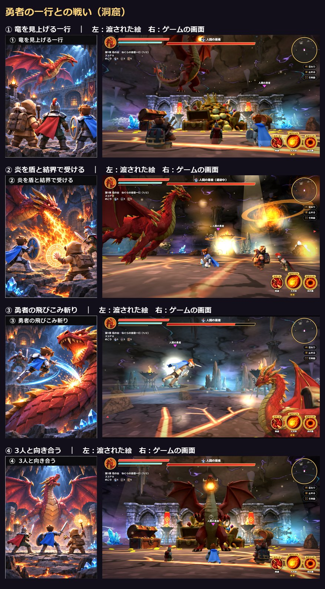

渡された絵 と ゲーム画面の見比べ
2026年11月14日 版 1115i （左：渡された絵 右：ゲームの画面）
結論：場面の並び（だれが・どこで・どう戦うか）は、6枚とも絵に合わせました。カメラも「竜が左手前に大きく、敵が正面」に寄せました。まだ届いていないのは、絵のような横からの構図、敵の大きさと近さ、画面のボタンの並びです。
表紙の4コマ

合っている所
- 必殺技は、竜を前の下から見上げる向きになった（表紙の左上）。
- 敵軍の登場は、上からの見下ろしと、竜の肩ごしの望遠になった（右下・右上）。
- ボスと大きなゴーレムは、真横から、崩れる所を映す（左下）。
まだちがう所
- シナリオ1では王都の章を通らないので、燃える城と軍勢の場面は出ない（シナリオ2で出る）。
- 表紙ほど兵がびっしり並んでいない。
今回直した事
- 必殺技のカメラは、連射の時は動かさず、単発の時だけゆっくり回りこむ形にした。
勇者の一行との戦い（洞窟）

合っている所
- 顔ぶれは絵と同じ3人（青マントの勇者・赤マントの騎士・背負い袋の魔法使い）。
- 始まりは、3人のうしろから竜を見上げる。
- 金色の結界、盾、飛びこみ斬りがある。
まだちがう所
- 絵の①は外（城と橋）だが、ゲームは洞窟の中。
- 絵では3人が大きく手前にいる。ゲームのふだんの画面では、3人は竜の下に小さく映る。
今回直した事
- 最初の結界と最初の飛びこみ斬りの時だけ、勇者の肩ごしのカメラにして、勇者を手前に大きく映すようにした。
ワイバーンとの一騎打ち

合っている所
- 緑のワイバーンが、土けむりを上げて低く突っこんでくる。
- 正面からぶつかると火花が出る。
- 炎を風でかわす。倒す所は真横から映る。
まだちがう所
- 絵の④は組みあい（つかみ合い）だが、ゲームは炎をあびせて落とす。
- 絵は遺跡と滝のすぐそば。ゲームは開けた谷の上で戦う事が多い。
今回直した事
- 始まりのカメラを、ワイバーンのうしろから赤い竜を見る向きにした。
地下の迷宮

合っている所
- 石づくりのかべ・たいまつ・赤い旗・青い窓・階段・奥の扉がある。
- 小鬼・骸骨・スライム・よろいの竜人（斧）が出る。骸骨と竜人は Tripo で作った。
- 赤い鎖とかぎ穴の印が光る封印の扉がある。
まだちがう所
- 絵は竜を横から見ている。ゲームは竜のななめうしろから見ている（操作のため、真横にはしていない）。
- 絵はアーチや手すりが細かい。ゲームのかべは平らな石づみ。
- 絵の敵はすぐ目の前に大きい。ゲームは少し遠い。
今回直した事
- 迷宮を広間から通路に変え、鉄ごうしの門で区切って奥へ進む形にした。
- 広間の中のカメラを、竜の右肩のすぐうしろ・低い位置に寄せた（竜が左手前に大きく映る）。
- 小鬼・骸骨・竜人を大きくした。
- 扉・階段・柱にめり込まないようにした。
封印の扉の前のゴーレム戦

合っている所
- 竜が左手前、ゴーレムが封印の扉の前に立つ並びが同じ。
- 胸が青く光る四角い岩のゴーレム。
まだちがう所
- 見本は体力が左上・技のボタンが右下・スティックが左下。ゲームは体力が左下で、ボタンの並びがちがう。
- 見本は胸の光に照準の印が出る。ゲームには無い。
- 見本ほど火花と岩のかけらが多くない。
今回直した事
- カメラを寄せて、見本と同じ「左手前に竜・正面にゴーレム」にした。
魔王の間

合っている所
- 赤い魔法陣・階段の祭だん・かがり火・溶岩のひびの床がある。
- 魔王は魔法陣の前に浮かぶ。
まだちがう所
- 見本は左右に大きな扉がある。ゲームには無い。
- 見本の魔王は赤い肌で大きい。ゲームの魔王は小さめで遠い。
- 画面の文字やボタンの並びは見本とちがう（上と同じ）。
今回直した事
- 扉が開くと、広間を魔王の間に建てかえる形にした。カメラは広間と同じ寄せ方。
気づき
- 絵はどれも「止まった1コマ」で、竜を横から見ています。ゲームは操作するので、竜のうしろ寄りから見ます。ここが一番ちがって見える理由です。
- 見本の画面（ゴーレム戦・魔王の間）の、体力の位置や技のボタンの並びは、まだ合わせていません。
- シナリオ1は、勇者 → ワイバーン → 地下の迷宮 → ゴーレム → 封印の扉と魔王。シナリオ2は今までの6章です。選択画面のボタンで切りかえます。